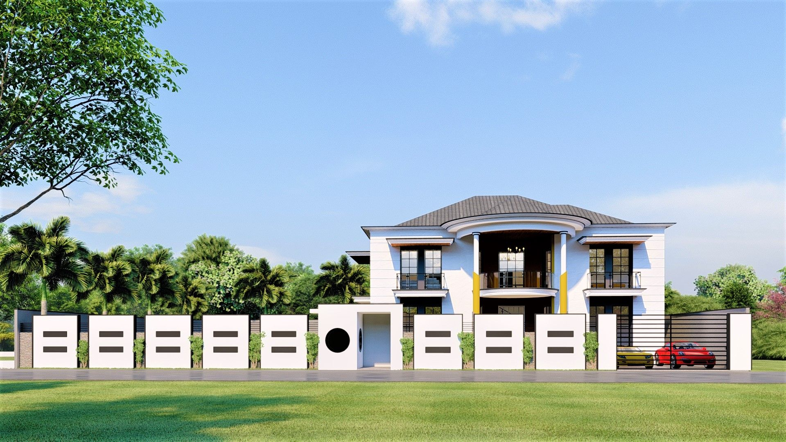
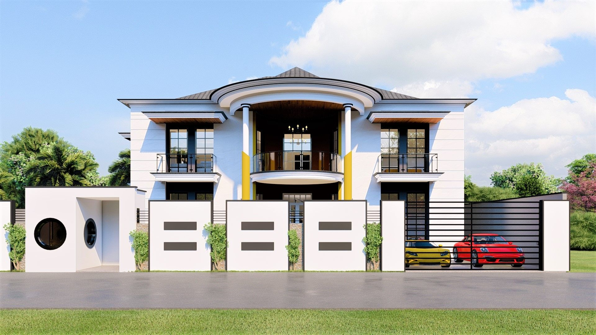
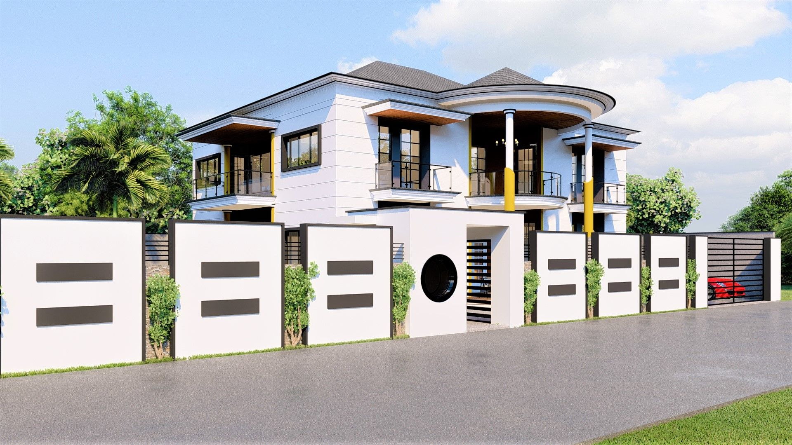
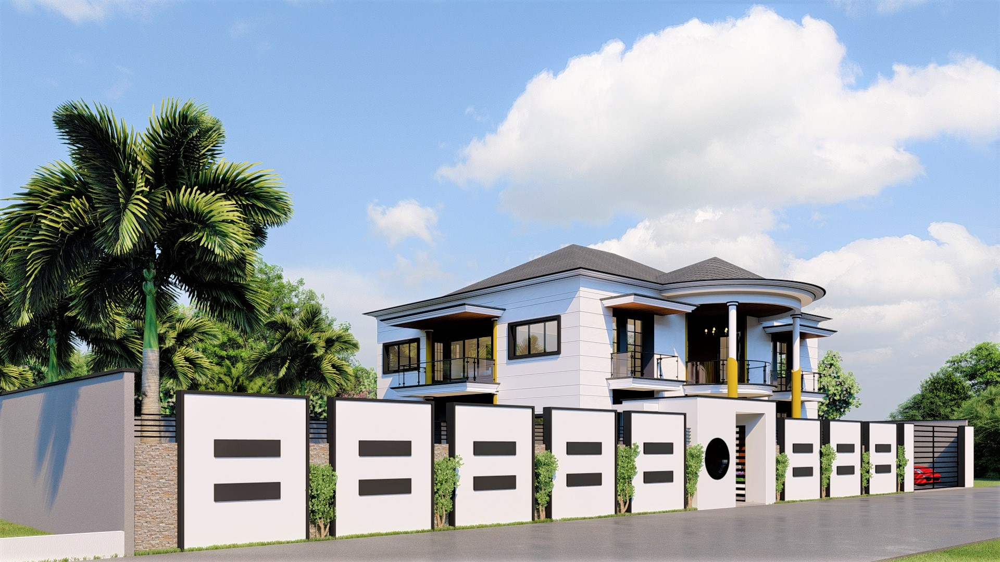
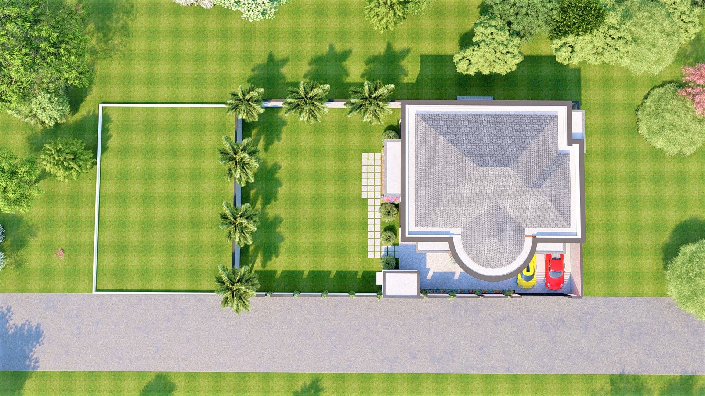
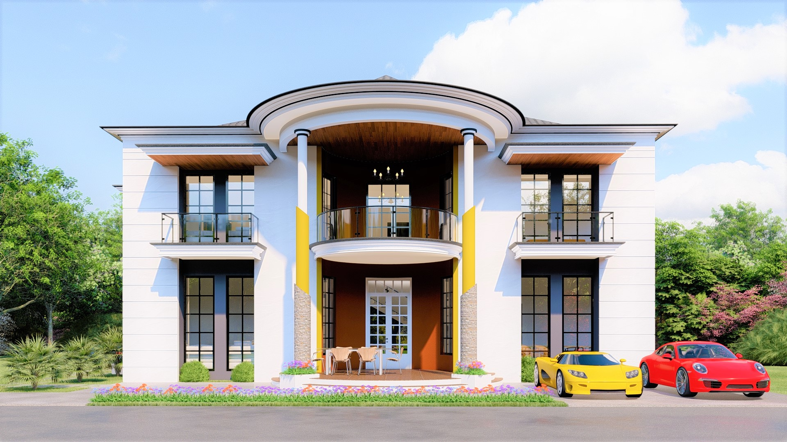
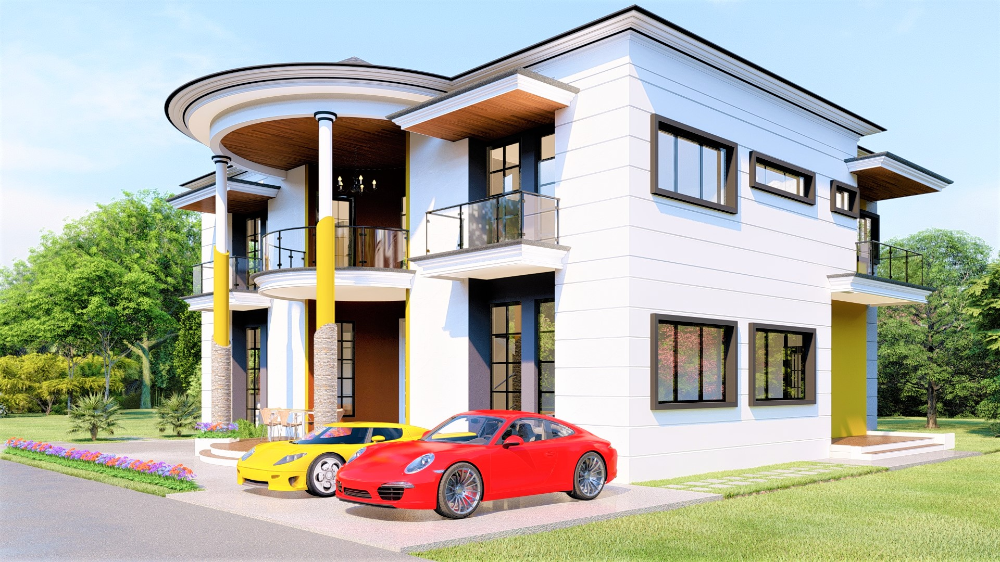
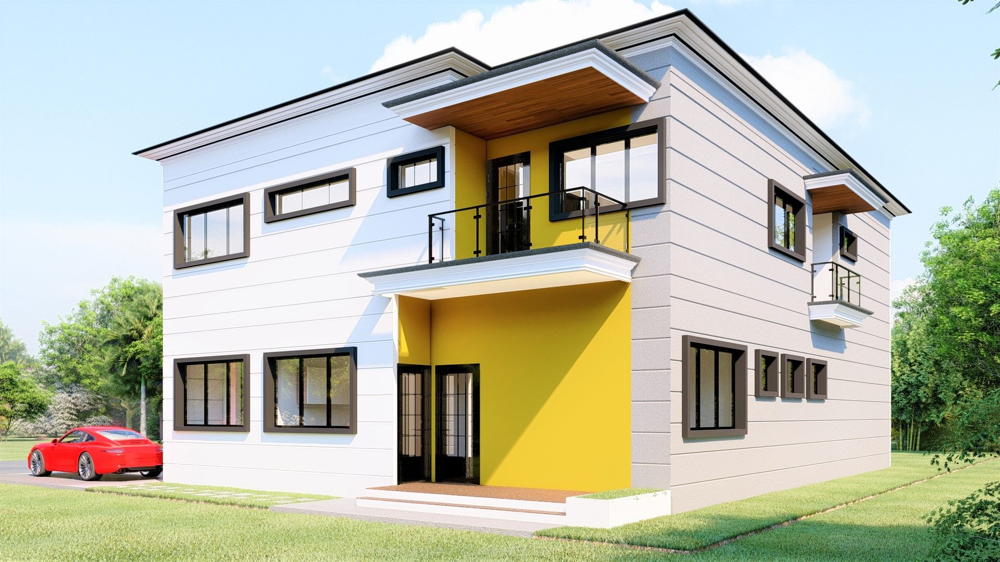

Confort Familial & Ouverture
La Villa Horizon est une résidence de 200 m² conçue pour offrir un équilibre parfait entre intimité familiale et espaces de partage. Située sur un terrain en pente légère, l'architecture tire parti de la topographie pour créer des demi-niveaux qui dynamisent l'espace intérieur.
Le concept repose sur une "boîte à lumière" centrale qui distribue la clarté naturelle dans toutes les pièces de vie. La façade arrière est presque totalement vitrée, s'ouvrant sur une terrasse en bois et un jardin paysager qui semble prolonger le salon vers l'infini.
L'utilisation de briques de parement locales et de menuiseries en aluminium noir crée un contraste élégant. La toiture à larges débords assure une protection solaire efficace, tout en collectant les eaux de pluie pour l'entretien des espaces verts, s'inscrivant dans une démarche de durabilité.







